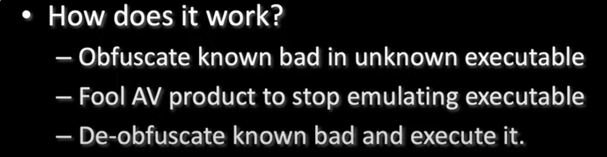

- Avoid creating a thread affiliated with a module on disk
- - creates thread
- - calls function named "run"
- - function takes arg (pointer to beacon reflective dll package)
- - cast that to a function pointer
- - then calls it

- Process Injection (avoid modules threads)
- - create suspended process (including desirable start address)
- - get the context
- - update the context to have it call desired start address of payload
- - set the thread to the new context
- - then resume (the thread will have the desired start address but call the payload)

-
=============================================================================================================================================================================================
- Artifact Kit: generate exes, dlls, and service exes

- you can change /artifact/src-common/bypass-pip.c
- > go to the bottom of the file and change this

- Example Change (we just want to change it):

- start by modifying the /artifact/src-common/patch.c
- This is what the default patch.c looks like - these are all very basic and recognizedsyscalls
-
- Example Change ~ largly does the exact same thing, just using different apis
-
- > ./build.sh ~ once scripts have been modified
then go build you're exe and dlls like normal-
- names like Joe-PC or Joe* generally means your binary is being sandboxed
-
Recommend that you AVOID- use of RWXmemory
- Threads with which have a start address that is not associated with a memory mapped dllor your executableitself
-
- Here is how he meets the goals
- allocates memory that has RW permissions
- execute malicious intent
- flip it to ReadExecute when done


-
========================================================================================================================================
What does the AV think of your exe?- What about unknown?
- - some environments default to good (not as common)
- - some will default to run but notify client
- - some environments default to big scary screen (more common)
- -shit maybe all 3


- Local Analysis
-
- Static
- - rulebased
-
- - heuristic
- ~ compile time
- ~ compiler
- ~ import table (what does it think itll be doing)
- ~ metadata [name of app, whats the icon, etc] & resources
- ~ signed?
- ~ entropy [does it look like suspicious packed data (encoded)]
- - correlation
- ~ list of vectors of things we know about the binary
- ~ compare this vector to library of binaries
- Which on is it most like? {list will include good and bad binaries}
- What to do about this?
- - rulebased
- ~ obfuscate
- ~ change it until the signature breaks
- heuristic- ~ take metadata from an existing program
- ~ pay attention to the IMPORT table (obfuscate the known malicious handles)
- ~ use a valid code signing certificate
- correlation
Dynamic
- starts executing in the sandbox until it hits API call
- the idea is that it takes the api calls in memoryuntil it can conclude whether its malicious
- Drawbacks
- 1. time it takes
- 2. incomplete emulation

========================================================================================================================================